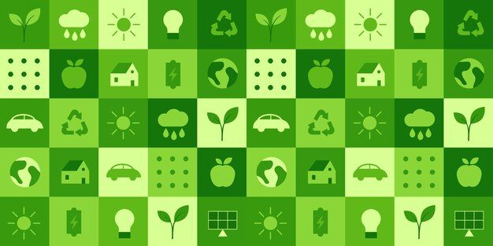
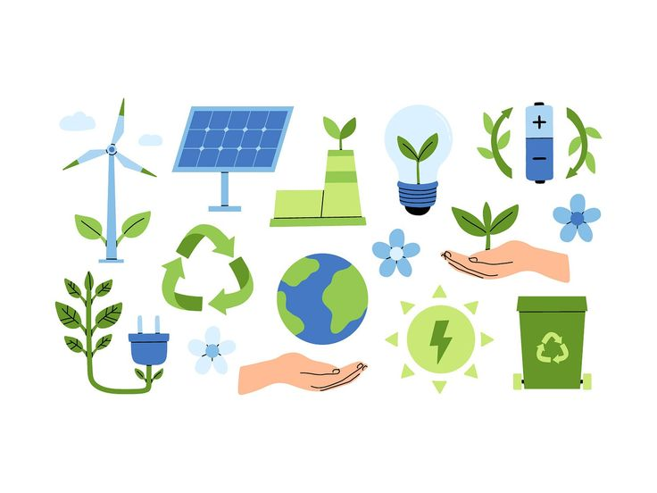

L'énergie est essentielle pour faire fonctionner nos maisons, nos transports et nos industries. Mais une grande partie de cette énergie vient encore de sources polluantes comme le pétrole ou le charbon. Pour protéger notre planète, il est important d'économiser l'énergie et d'utiliser des sources renouvelables, comme le soleil ou le vent. Chacun peut agir : éteindre les appareils inutilisés, utiliser des ampoules LED, ou encore privilégier les transports en commun.
| Geste écologique | Impact positif |
|---|---|
| Éteindre les lumières inutiles | Réduit la consommation d'électricité |
| Utiliser des ampoules LED | Consomme moins d'énergie que les classiques |
| Choisir les transports en commun | Diminue les émissions de CO₂ |
| Chauffer modérément son logement | Moins de gaz ou d'électricité utilisée |
| Installer des panneaux solaires | Utilise une source d'énergie renouvelable |